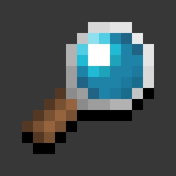

My Minecraft & Other Mods

Smart Searching: Effortlessly search and highlight items across all chests and inventories with smart keyword matching.

The Butcher: An atmospheric and terrifying horror mod that introduces custom-animated entities, suspense, and a brand-new survival nightmare.

The End of Life: An immersive adventure mod that transforms the familiar atmosphere of Minecraft into a dark, mysterious, and unforgiving survival experience.

TTSL (TheToji's Special Library): The core dependency library required to power, stabilize, and streamline all mods created by TheToji.
YOptimizer: YOptimizer is a core performance optimization mod designed to boost FPS and reduce stuttering.
YOptimizer Plus: YOptimizer Plus is an advanced performance optimization mod designed to maximize FPS and deliver ultimate smoothness.